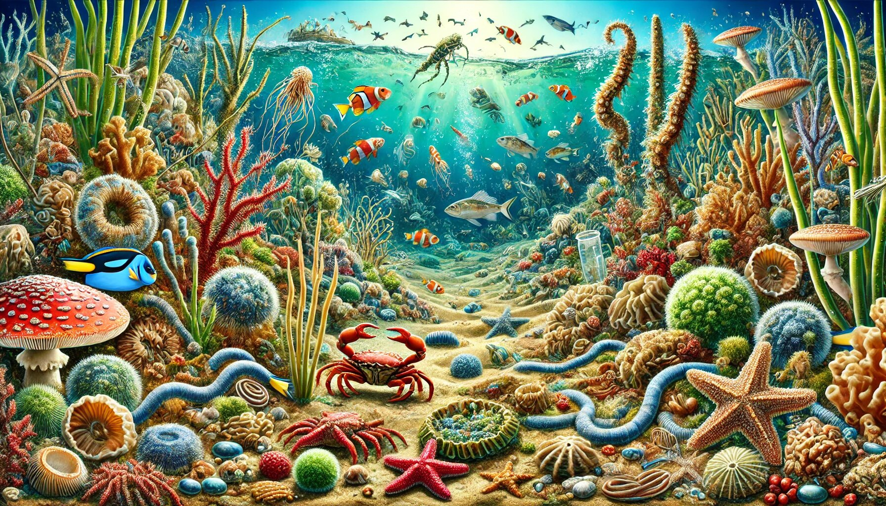

Discover the World of Seashells with These Amazing Shell Identification Apps
Seashells are nature’s little treasures, scattered along beaches, waiting to be discovered. Whether you’re a seasoned shell collector, a curious beachcomber, or someone who just loves the ocean, identifying seashells can be both fun and rewarding. But let’s face it—sometimes telling a conch from a cockle can feel like solving a mystery. That’s where shell identification app come to the rescue! In this article, we’ll explore four fantastic apps that make shell identification a breeze: iNaturalist, Gulf and Atlantic Seashells App, National Shell Museum App, and more. So, grab your sunhat, put on your flip-flops, and let’s dive into the world of seashells!

1. iNaturalist: Your Pocket Naturalist
If you’ve ever wished for a personal naturalist to accompany you on your beach adventures, iNaturalist is the next best thing. This app is like having a friendly biologist in your pocket, ready to help you identify not just seashells but also plants, animals, and insects. It’s a one-stop shop for nature lovers!
Why iNaturalist Stands Out:
- Community-Powered Identification: iNaturalist connects you with a global community of nature enthusiasts and experts. Snap a photo of a shell, upload it, and watch as the community helps identify it. It’s like social media for nature nerds (in the best way possible!).
- User-Friendly Interface: The app is intuitive and easy to use, even for beginners. You don’t need a degree in marine biology to figure it out.
- Educational Value: iNaturalist doesn’t just tell you the name of the shell; it provides fascinating details about the species, its habitat, and its role in the ecosystem. You’ll walk away smarter than when you started!
- Citizen Science Contribution: By using iNaturalist, you’re contributing to scientific research. Your observations help scientists track species and monitor biodiversity. How cool is that?
Perfect For: Beachcombers who love learning about all aspects of nature and anyone who enjoys being part of a global community of nature lovers.
2. Gulf and Atlantic Seashells App: Your Coastal Companion
If you’re exploring the beaches of the Gulf of Mexico or the Atlantic Coast, the Gulf and Atlantic Seashells App is your ultimate guide. This app is like a field guide that fits right in your pocket, making it easy to identify the shells you find along these shores.
Why Gulf and Atlantic Seashells App Rocks:
- Region-Specific Focus: This app is tailored specifically for the Gulf and Atlantic regions, so you won’t waste time sifting through irrelevant species. It’s like having a local expert by your side.
- Extensive Database: With over 1,000 species listed, this app covers almost every shell you’re likely to encounter. From the common to the rare, it’s got you covered.
- High-Quality Images: The app features stunning, high-resolution images that make identification a visual treat. It’s like flipping through a beautifully illustrated book, but better!
- Offline Access: No Wi-Fi on the beach? No problem! This app works offline, so you can identify shells even in the most remote locations.
Perfect For: Shell collectors who frequent the Gulf and Atlantic coasts and anyone who wants a reliable, region-specific identification tool.
3. National Shell Museum App: The Shell Enthusiast’s Dream
If you’re serious about seashells, the National Shell Museum App is a must-have. Developed by the Bailey-Matthews National Shell Museum in Florida, this app is packed with features that will delight any shell enthusiast.
Why the National Shell Museum App Shines:
- Expert-Curated Content: The app is backed by the expertise of the National Shell Museum, so you know you’re getting accurate, reliable information.
- Interactive Learning: The app includes quizzes, fun facts, and interactive features that make learning about shells engaging and enjoyable. Who knew education could be this fun?
- Virtual Museum Tours: Can’t make it to Florida? No worries! The app offers virtual tours of the museum’s exhibits, bringing the wonders of the shell world to your fingertips.
- Comprehensive Database: With detailed descriptions and images of hundreds of shells, this app is a treasure trove of information.
Perfect For: Serious shell collectors and enthusiasts, and families looking for an educational and fun activity.
4. Seashell ID: Simple and Effective
While not as feature-rich as the others, Seashell ID is a straightforward app that gets the job done. It’s perfect for those who want a no-frills, easy-to-use tool for identifying shells.
Why Seashell ID is Great:
- Simplicity: The app is designed to be simple and user-friendly. Just snap a photo, and the app will help you identify the shell. No complicated menus or confusing features.
- Quick Results: If you’re in a hurry to identify a shell, this app delivers fast results. It’s perfect for quick beach trips.
- Affordable: Seashell ID is often available at a lower price point than other apps, making it a budget-friendly option.
Perfect For: Casual beachgoers who want a quick and easy identification tool and anyone who prefers a straightforward, no-nonsense app.
Why These Apps Are a Game-Changer for Shell Enthusiasts
Before these apps came along, identifying seashells required lugging around heavy field guides or relying on vague memories of what a shell “kind of” looked like. Thanks to these apps, those days are over! Here’s why they’re a game-changer:
- Convenience: All the information you need is right on your phone. No more flipping through pages or guessing games.
- Accuracy: With high-quality images and expert-backed data, these apps provide accurate identifications you can trust.
- Learning Made Fun: These apps turn shell identification into an interactive, educational experience. You’ll learn something new every time you use them.
- Community and Connection: Apps like iNaturalist connect you with a global community of nature lovers, making shell collecting a shared adventure.
Tips for Using Shell Identification Apps Like a Pro
To get the most out of these apps, here are a few tips:
- Take Clear Photos: Good lighting and a clear shot make identification easier. Avoid blurry or shadowy images.
- Note the Location: Many apps use location data to narrow down species. Make sure your location services are enabled.
- Be Patient: Some identifications may take a little time, especially if you’re relying on community input.
- Have Fun: Remember, the goal is to enjoy the process. Don’t stress too much about getting it perfect!
Conclusion: Shell Identification Made Easy and Fun
Whether you’re a seasoned shell collector or a casual beachcomber, these shell identification apps are here to make your life easier—and a lot more fun. From the community-driven iNaturalist to the expert-backed National Shell Museum App, there’s something for everyone. So, the next time you’re strolling along the beach and stumble upon a mysterious shell, don’t fret. Just whip out your phone, open one of these apps, and let the magic happen. Who knows? You might just discover your new favorite hobby—or at least impress your friends with your newfound shell knowledge!
Happy shell hunting! 🐚